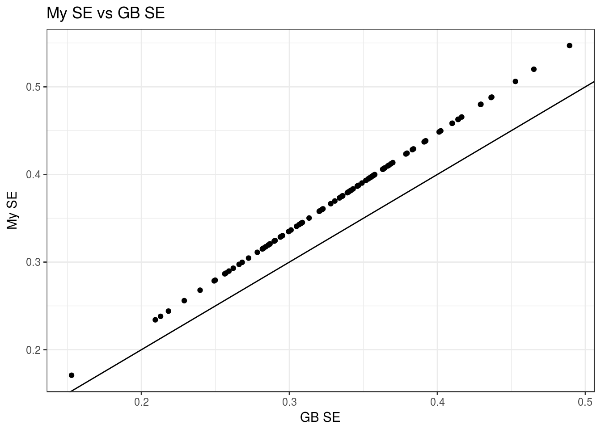
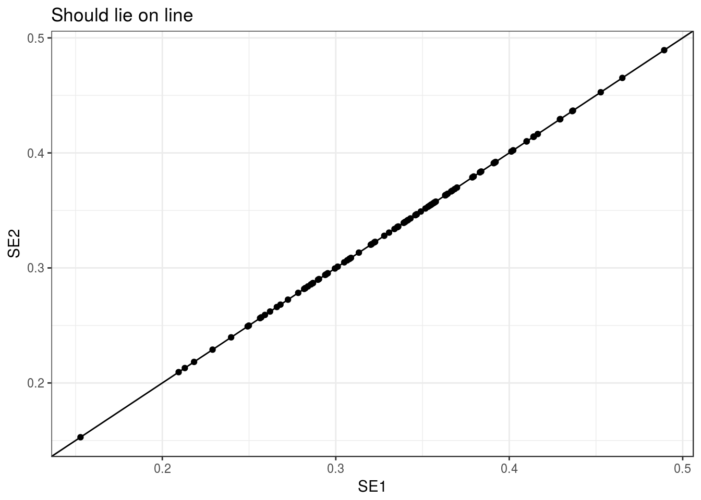
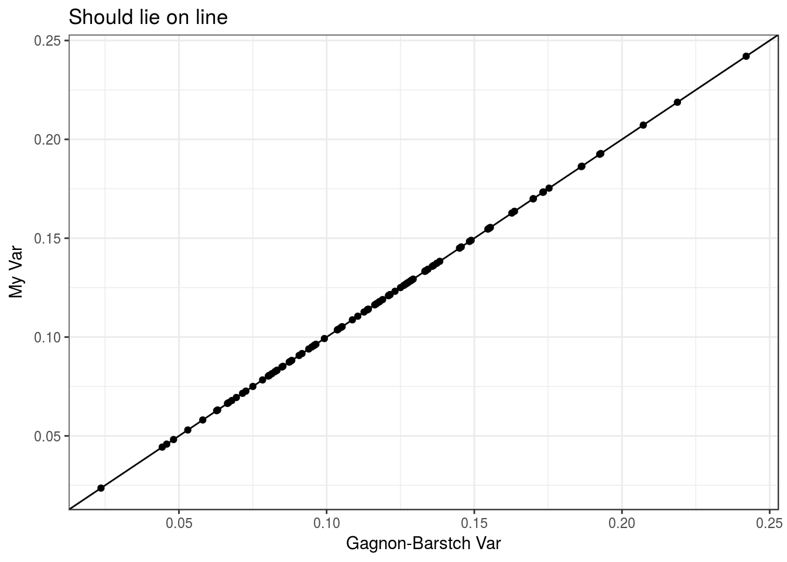

Here, I double check my control-gene based variance inflation calibration code I used during my simulations.
First, generate simulated data
library(tidyverse)## Loading tidyverse: ggplot2
## Loading tidyverse: tibble
## Loading tidyverse: tidyr
## Loading tidyverse: readr
## Loading tidyverse: purrr
## Loading tidyverse: dplyr## Conflicts with tidy packages ----------------------------------------------## filter(): dplyr, stats
## lag(): dplyr, stats## Load code I used in sims
source("../../reproduce_ruv3/Code/nc_adjustment_methods.R")
set.seed(7)
n <- 20
p <- 100
k <- 3
q <- 2
X <- matrix(rnorm(n * q), nrow = n)
beta <- matrix(rnorm(q * p), nrow = q)
beta[, 1:25] <- 0
Z <- matrix(rnorm(n * k), nrow = n)
alpha <- matrix(rnorm(k * p), nrow = k)
E <- matrix(rnorm(n * p), nrow = n)
Y <- X %*% beta + Z %*% alpha + E
ctl <- rep(FALSE, length = p)
ctl[1:13] <- TRUE
vout <- vicar::vruv4(Y = Y, X = X, ctl = ctl, k = k, cov_of_interest = 2, likelihood = "normal",
limmashrink = FALSE, include_intercept = FALSE, gls = FALSE)
obj <- list()
obj$betahat <- vout$betahat
obj$sebetahat <- vout$sebetahat_ols
obj$df <- nrow(Y) - ncol(X) - k
ctl_out <- ctl_adjust(obj, control_genes = ctl)
dat <- data_frame(SE1 = c(ctl_out$sebetahat), SE2 = c(vout$sebetahat))
ggplot(data = dat, mapping = aes(x = SE1, y = SE2)) +
geom_point() +
geom_abline(slope = 1, intercept = 0) +
theme_bw() +
xlab("GB SE") +
ylab("My SE") +
ggtitle("My SE vs GB SE")
vout$sebetahat[1] / ctl_out$sebetahat[1]## [1] 1.113## I use this
multme <- solve(crossprod(X))[2, 2]
R <- qr.R(qr(X))
multme## [1] 0.07958(1 / R[2,2]) ^ 2## [1] 0.07958## Gagnon-Bartsch uses this
multgag <- solve(crossprod(cbind(X, vout$Zhat)))[2,2]
dat <- data_frame(SE1 = c(vout$sebetahat) * sqrt(multme / multgag),
SE2 = c(ctl_out$sebetahat))
ggplot(data = dat, mapping = aes(x = SE1, y = SE2)) +
geom_point() +
geom_abline(slope = 1, intercept = 0) +
theme_bw() +
ggtitle("Should lie on line")
Using the ruv R package:
ruv4out <- ruv::RUV4(Y = Y, X = X[, 2, drop = FALSE], ctl = ctl, k = k,
Z = X[, -2, drop = FALSE])
ruv4_covadjust <- ruv::variance_adjust(ruv4out)
dat <- data_frame(GB = c(ruv4_covadjust$varbetahat.rsvar), ME = c(ctl_out$sebetahat) ^ 2)
ggplot(data = dat, mapping = aes(x = GB, y = ME)) +
geom_point() +
geom_abline(slope = 1, intercept = 0) +
theme_bw() +
ggtitle("Should lie on line") +
xlab("Gagnon-Barstch Var") +
ylab("My Var")
Thus, it is slightly different.
sessionInfo()## R version 3.3.2 (2016-10-31)
## Platform: x86_64-pc-linux-gnu (64-bit)
## Running under: Ubuntu 16.04.2 LTS
##
## locale:
## [1] LC_CTYPE=en_US.UTF-8 LC_NUMERIC=C
## [3] LC_TIME=en_US.UTF-8 LC_COLLATE=en_US.UTF-8
## [5] LC_MONETARY=en_US.UTF-8 LC_MESSAGES=en_US.UTF-8
## [7] LC_PAPER=en_US.UTF-8 LC_NAME=C
## [9] LC_ADDRESS=C LC_TELEPHONE=C
## [11] LC_MEASUREMENT=en_US.UTF-8 LC_IDENTIFICATION=C
##
## attached base packages:
## [1] stats graphics grDevices utils datasets methods base
##
## other attached packages:
## [1] cate_1.0.4 dplyr_0.5.0 purrr_0.2.2 readr_1.0.0
## [5] tidyr_0.6.1 tibble_1.2 ggplot2_2.2.1 tidyverse_1.1.1
##
## loaded via a namespace (and not attached):
## [1] Rcpp_0.12.10 lubridate_1.6.0 lattice_0.20-34
## [4] corpcor_1.6.8 esaBcv_1.2.1 assertthat_0.2.0
## [7] rprojroot_1.2 digest_0.6.12 psych_1.6.12
## [10] R6_2.2.0 plyr_1.8.4 backports_1.0.5
## [13] stats4_3.3.2 RSQLite_1.1-2 evaluate_0.10
## [16] sva_3.18.0 vicar_0.1.6 httr_1.2.1
## [19] lazyeval_0.2.0 svd_0.4 readxl_0.1.1
## [22] annotate_1.48.0 R.oo_1.21.0 R.utils_2.5.0
## [25] S4Vectors_0.8.11 Matrix_1.2-8 rmarkdown_1.3
## [28] labeling_0.3 splines_3.3.2 stringr_1.2.0
## [31] foreign_0.8-67 munsell_0.4.3 broom_0.4.2
## [34] modelr_0.1.0 BiocGenerics_0.16.1 mnormt_1.5-5
## [37] ruv_0.9.6 mgcv_1.8-17 htmltools_0.3.5
## [40] IRanges_2.4.8 leapp_1.2 XML_3.98-1.5
## [43] R.methodsS3_1.7.1 MASS_7.3-45 grid_3.3.2
## [46] nlme_3.1-131 jsonlite_1.3 xtable_1.8-2
## [49] gtable_0.2.0 DBI_0.6 magrittr_1.5
## [52] scales_0.4.1 stringi_1.1.2 reshape2_1.4.2
## [55] genefilter_1.52.1 limma_3.26.9 xml2_1.1.1
## [58] tools_3.3.2 forcats_0.2.0 Biobase_2.30.0
## [61] hms_0.3 parallel_3.3.2 survival_2.41-2
## [64] yaml_2.1.14 AnnotationDbi_1.32.3 colorspace_1.3-2
## [67] rvest_0.3.2 memoise_1.0.0 knitr_1.15.1
## [70] haven_1.0.0This site was created with R Markdown